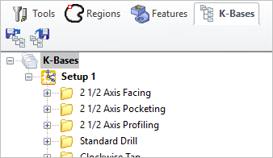

Selecting the K-Bases tab under the Machining Objects Browser displays the Knowledge Base manager.
Note: See Right-Click Commands for a complete list of all right-click commands available from the Machining Operations (Mops) Browser and the Machining Objects (Mobs) Browser.
There are right-click commands available for use in the K-Bases tab. |
 The Machining Objects (MObs) Browser, K-Bases Tab |
Refer to the following sections for a detailed description on Knowledge base |
|||||||||||||||||||||||||||||||||||||||